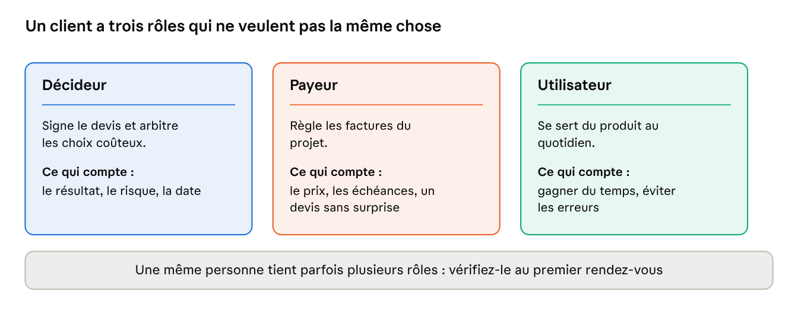
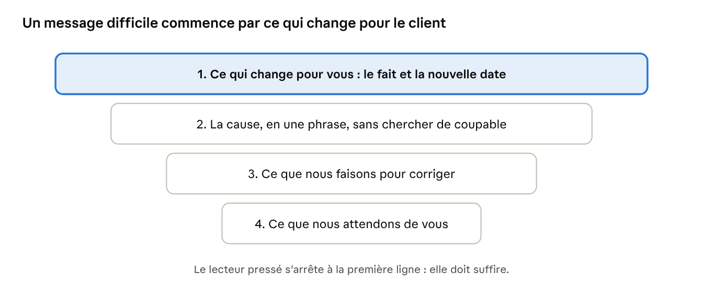
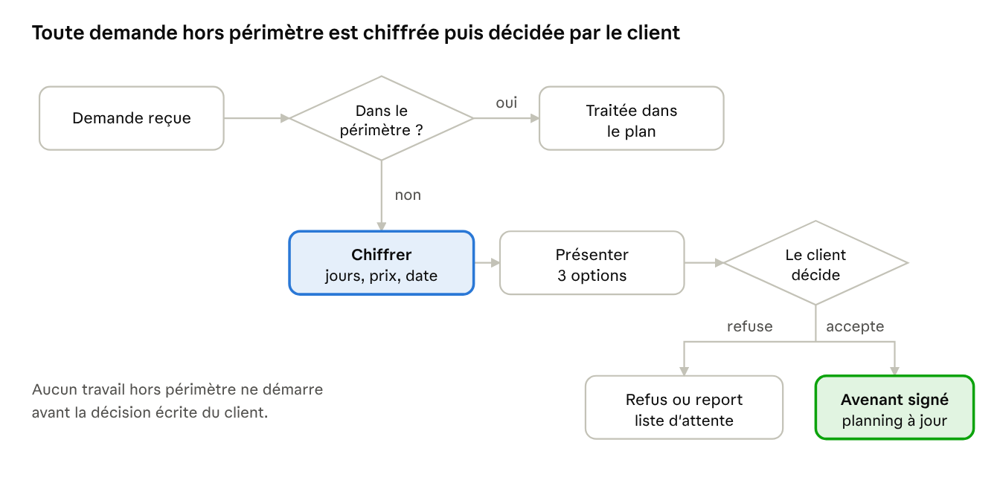
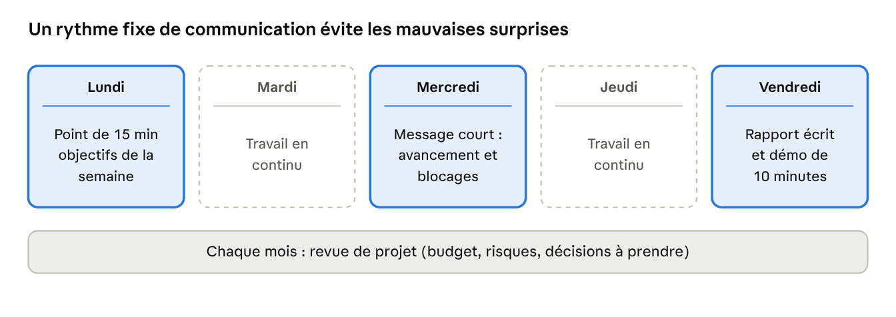

Module 12 : gestion du client et communication
Ce que vous saurez faire
À la fin de ce module, vous saurez parler à un client sans jargon, tenir une réunion utile, annoncer une mauvaise nouvelle et dire non sans perdre la relation. Chaque situation est jouée deux fois : une version maladroite, puis une version bien menée, avec l'explication de ce qui change.
- Identifier les trois rôles d'un client : décideur, payeur, utilisateur.
- Conduire un premier rendez-vous de découverte avec un script et des questions prêtes.
- Expliquer la dette technique sans jargon.
- Réagir à une demande urgente, et refuser une demande hors périmètre.
- Annoncer un retard et un incident par écrit, avec les bons éléments.
- Gérer un client qui change d'avis, avec une demande de changement.
- Rédiger un compte rendu et un devis qui protègent les deux parties.
- Dire ce qu'il faut sur l'usage d'agents IA, les données personnelles et la responsabilité.
| Repère | Valeur |
|---|---|
| Prérequis | Modules 10 et 11 |
| Durée | 5 à 6 heures, atelier compris |
| Lien avec Facturo | Marie Giraud, cabinet comptable de 12 personnes, client du projet d'export |
| Livrable final | Un compte rendu, un devis, un message d'incident et une réponse à une demande hors périmètre |
Ce module donne des repères de communication et des exemples de clauses de devis. Il ne remplace pas un conseil juridique : pour un contrat réel, faites relire par un juriste.
Leçon 12.1 : savoir à qui l'on parle
Un client n'est pas une personne unique avec un seul désir. Dans une organisation, trois rôles se croisent : celui qui décide, celui qui paie, celui qui utilise. Leurs intérêts divergent, donc leurs questions aussi.

Lire le schéma
- Chaque carte est un rôle, avec ce qui compte pour lui.
- Le décideur pense résultat et risque ; il veut une date et une garantie.
- Le payeur pense budget et échéances ; il veut un devis sans surprise.
- L'utilisateur pense gain de temps ; c'est lui qui voit si l'outil marche vraiment.
- Le bandeau rappelle qu'une personne cumule parfois plusieurs rôles, mais qu'il faut le vérifier.
Chez Facturo, imaginons que le cabinet de Marie Giraud emploie 12 personnes. Marie décide, une assistante de gestion s'occupe des paiements, les collaboratrices comptables utilisent l'export. Si vous ne parlez qu'à Marie, vous ne saurez rien des difficultés réelles des collaboratrices.
Le premier rendez-vous de découverte sert à le vérifier. Voici deux versions de son ouverture.
Scène 1 : le rendez-vous de découverte, version maladroite
Lecteur : Bonjour Marie. Alors, vous voulez un export CSV ?
Marie : Oui, enfin, il faut que ce soit rapide.
Lecteur : Pas de souci, on a l'habitude. On fait ça avec une API REST et un
job asynchrone, donc ça scale sans problème.
Marie : Hum, d'accord... et ça coûte combien ?
Lecteur : On vous envoie un devis, on a de quoi faire.Le lecteur propose une solution avant d'avoir compris le problème, emploie du jargon (API REST, job asynchrone, scale), et laisse le budget en suspens. Marie repart sans avoir dit ce qui la gêne.
Scène 1 bis : version bien menée
Lecteur : Bonjour Marie. Merci de prendre 30 minutes. Je vous propose de
commencer par comprendre comment cela se passe chez vous, avant de
parler de solution. Cela vous convient ?
Marie : Oui, très bien.
Lecteur : Racontez-moi la dernière clôture mensuelle, de la réception des
factures jusqu'à l'import dans votre logiciel.
Marie : [décrit les étapes]
Lecteur : Qui fait quoi, à chaque étape ? Et qui décide si on change d'outil ?
Marie : Moi pour la décision. Pour le travail, ce sont Camille et Sofiane.
Lecteur : Pourrais-je leur parler 20 minutes la semaine prochaine ?
Ce sont eux qui verront les problèmes au quotidien.
Marie : Bien sûr.
Lecteur : Pour finir : une date vous importe-t-elle, et avez-vous un budget
en tête, même approximatif ?Cette version annonce le plan, pose des questions ouvertes sur un fait passé, identifie les rôles, demande à rencontrer les utilisateurs, et aborde la date et le budget sans gêne.
| Étape du rendez-vous | Durée | Exemple de phrase |
|---|---|---|
| Ouverture | 3 min | « Je propose de comprendre avant de parler de solution. » |
| Le passé | 12 min | « Racontez-moi la dernière fois... » |
| Les personnes | 5 min | « Qui décide, qui utilise, qui paie ? » |
| Les contraintes | 5 min | « Une date, un budget, un logiciel à respecter ? » |
| Clôture | 5 min | « Je vous écris un compte rendu demain, vous me corrigez. » |
À retenir
Cherchez les trois rôles dès le premier rendez-vous. Annoncez le plan, questionnez sur le passé, parlez budget et date. Terminez par une promesse de compte rendu.
Erreurs fréquentes
- Proposer une solution technique avant d'avoir compris le problème.
- Ne parler qu'au décideur et ignorer ceux qui utiliseront l'outil.
- Fuir la question du budget par gêne : le devis la rendra plus délicate encore.
Leçon 12.2 : expliquer sans jargon et réagir à l'urgence
Un client comprend ce qui le touche, pas ce qui vous occupe. Traduisez donc chaque terme technique en conséquence pour lui : du temps, de l'argent, un risque ou une date. Le jargon n'est pas interdit, mais il se définit en une phrase au premier usage.
| Terme technique | Ce que le client comprend | Phrase de traduction |
|---|---|---|
| Dette technique | Un retard accumulé sur l'entretien | « C'est comme reporter l'entretien d'une voiture : chaque mois le prochain devient plus cher. » |
| Déploiement | Mise en ligne | « C'est le moment où la nouveauté devient visible pour vos utilisateurs. » |
| Environnement de test | Une copie sans risque | « Une répétition générale avant la vraie représentation. » |
| Bug | Un comportement inattendu | « Le logiciel ne fait pas ce que nous avions convenu. » |
| Sauvegarde | Une copie de sécurité | « Si un incident survient, nous pouvons revenir à hier matin. » |
| Refactorisation | Un rangement invisible | « On réorganise l'intérieur pour que les prochaines nouveautés coûtent moins. » |
| Test automatique | Un contrôle fait par une machine | « Un vérificateur qui rejoue chaque jour les cas importants. » |
La dette technique est le sujet le plus difficile à vendre, parce que son bénéfice est invisible. Voici la même réunion deux fois : Marie vient de demander une nouvelle fonction, et le lecteur sait que l'export actuel accumule des raccourcis.
Scène 2 : expliquer la dette technique, version maladroite
Lecteur : Avant la nouvelle fonction, il faut refactoriser le module Facturation,
il y a beaucoup de dette technique et le couplage est trop fort.
Marie : Je ne comprends pas. Vous me demandez de payer pour que rien ne change ?
Lecteur : C'est important pour la maintenabilité.
Marie : D'accord, mais je veux ma fonction pour mars.Marie entend un surcoût sans bénéfice. Le lecteur n'a pas donné de chiffre, de risque, ni d'alternative.
Scène 2 bis : version bien menée
Lecteur : Pour livrer votre nouvelle fonction à la date voulue, j'ai une
décision à vous soumettre. Le code actuel de la facturation a été
écrit vite. Chaque nouveauté y prend aujourd'hui environ deux fois
plus de temps que prévu.
Marie : Et si on ne fait rien ?
Lecteur : Deux options. A : on ajoute la fonction tout de suite, c'est livré en
mars, mais la suivante coûtera plus cher et le risque d'erreur
sur les factures augmente. B : on consacre 3 jours à remettre le
code en ordre, la fonction arrive une semaine plus tard, et les
suivantes seront plus rapides. Je recommande B.
Marie : Pourquoi pas A ?
Lecteur : Parce que les erreurs sur les factures vous coûteraient plus cher
qu'une semaine de délai. Mais c'est votre décision.Le lecteur parle en conséquences (temps, risque, argent), donne deux options chiffrées, recommande l'une et laisse la décision. Aucun mot technique n'est employé.
Scène 3 : la demande urgente, version maladroite
Marie : Il me faut un export en PDF pour demain matin, c'est urgent !
Lecteur : D'accord, je m'en occupe tout de suite.
[le lecteur déplace deux tâches prévues, sans le dire ; l'agent de code livre
un PDF sans tests ; une erreur d'arrondi passe en production]Dire oui sans réfléchir transforme l'urgence de Marie en risque pour elle.
Scène 3 bis : version bien menée
Marie : Il me faut un export en PDF pour demain matin, c'est urgent !
Lecteur : Je comprends que c'est important. Pour que je vous aide au mieux :
que se passe-t-il si vous ne l'avez pas demain ?
Marie : Mon associé veut voir les chiffres de janvier avant sa réunion.
Lecteur : Alors le besoin de demain, c'est de lui montrer les chiffres. Je peux
vous fournir tout de suite le CSV, que vous ouvrez dans un tableur.
Un PDF propre et testé prendrait environ 4 jours : je vous propose
de le planifier pour la semaine prochaine. Cela vous convient ?
Marie : Oui, le CSV suffira pour demain.Le lecteur cherche le vrai besoin derrière l'urgence, propose une solution immédiate qui existe déjà, chiffre la demande complète et la planifie. L'urgence disparaît sans que la qualité soit sacrifiée.
À retenir
Traduisez chaque terme en temps, argent, risque ou date. Présentez deux options chiffrées avec une recommandation. Face à l'urgence, cherchez d'abord le vrai besoin.
Erreurs fréquentes
- Employer un mot technique sans le définir, ou l'éviter par condescendance.
- Dire oui à une urgence sans en mesurer l'effet sur le reste du planning.
- Présenter la dette comme une obligation plutôt que comme une décision du client.
Leçon 12.3 : annoncer un retard et un incident
Une mauvaise nouvelle annoncée tôt et clairement coûte moins cher qu'une bonne nouvelle annoncée tard. Le client pardonne un retard, pas la surprise. Pour écrire ces messages, on applique une structure en pyramide inversée : l'essentiel d'abord, le détail ensuite.

Lire le schéma
- Le niveau 1 est le plus large : c'est ce que tout le monde lira, donc il porte le fait et la nouvelle date.
- Le niveau 2 donne la cause en une phrase, sans chercher de coupable.
- Le niveau 3 décrit les mesures prises pour corriger.
- Le niveau 4 dit ce que l'on attend du client : une décision, une information, un accord.
Scène 4 : annoncer un retard, version maladroite
Lecteur : Salut Marie, petit souci, on a eu des imprévus techniques sur
l'envoi des e-mails, ça se complique un peu. On fait au mieux,
je te redis ça bientôt.Le message ne dit ni de combien on décale, ni pourquoi, ni ce que Marie doit faire. Elle devine le pire.
Scène 4 bis : version bien menée
Objet : Export comptable - mise en ligne décalée de 2 jours
Bonjour Marie,
La mise en ligne prévue lundi 22 février est décalée au mercredi 24 février.
Cause : le test d'envoi d'e-mail a révélé que les fichiers de plus de
500 lignes étaient tronqués. Nous l'avons détecté avant la
mise en ligne, donc aucun client n'est touché.
Nous corrigeons le problème et nous rejouons tous les tests demain.
De votre côté : aucune action n'est nécessaire. Si le décalage vous gène
vis-à-vis de votre équipe, appelez-moi demain et nous en parlons.
Cordialement,
Le lecteurLe message donne la nouvelle date dans l'objet, rassure sur l'impact, explique en une phrase et ne demande rien d'inutile. Si le fait n'est pas encore sûr, on le dit : « nous saurons mardi si la date tient ».
Un incident est plus sérieux : quelque chose en production a mal fonctionné pour des utilisateurs. La règle est de prévenir avant d'être interrogé, et de dire ce que l'on sait, ce que l'on ignore, et quand on reparlera.
Scène 5 : annoncer un incident, e-mail complet
Objet : Incident sur l'export du 3 mars - corrigé, vérification en cours
Bonjour Marie,
Ce matin, entre 9 h 10 et 9 h 50, l'export comptable a généré des fichiers
contenant des montants arrondis au mauvais chiffre après la virgule. Le
problème est corrigé depuis 10 h 15.
Ce que nous savons : 14 exports ont été produits pendant cette période.
Les factures dans Facturo ne sont pas touchées : seul le fichier était faux.
Ce que nous ignorons encore : lesquels de ces 14 fichiers ont été
importés dans votre logiciel. Nous le vérifierons avec vous cet après-midi.
Ce que nous faisons : nous régénérons les 14 fichiers corrects et nous
ajoutons un test d'arrondi qui aurait dû détecter l'erreur.
Ce que nous vous demandons : pouvez-vous nous indiquer qui a importé un
export ce matin ? Nous vous appelons à 14 h pour avancer ensemble.
Un compte rendu complet, avec la cause et les mesures préventives,
vous sera envoyé d'ici vendredi.
Cordialement,
Le lecteurCe message suit le plan : fait, périmètre exact, ce que l'on ignore, mesures, demande, prochain rendez-vous. Il ne cherche pas de coupable et ne minimise pas. Si l'incident touche des données personnelles, il faut en plus consulter la leçon 12.6 avant d'écrire.
À retenir
Prévenez tôt, mettez le fait et la date en premier. Distinguez ce que vous savez de ce que vous ignorez. Donnez l'heure de votre prochain message.
Erreurs fréquentes
- Attendre d'avoir toutes les réponses pour prévenir : le silence est interprété comme une dissimulation.
- Minimiser (« petit souci ») ou dramatiser, au lieu de donner le périmètre exact.
- Promettre une date de correction sans l'avoir vérifiée avec l'agent et l'équipe.
Leçon 12.4 : dire non, et gérer le client qui change d'avis
Dire non à une demande ne signifie pas refuser le client. Cela signifie remplacer un « non » sec par un « oui, à telle condition » ou un « pas maintenant, voici quand ». Le client entend alors que vous protégez le projet, pas que vous résistez.
Scène 6 : refuser une demande hors périmètre, version maladroite
Marie : Pendant que vous y êtes, pouvez-vous aussi faire l'export Excel ?
Lecteur : Non, ce n'est pas dans le devis.
Marie : Ah. Je pensais que c'était compris.Le refus est exact mais froid, et il laisse Marie avec le sentiment d'avoir été mal comprise.
Scène 6 bis : version bien menée
Marie : Pendant que vous y êtes, pouvez-vous aussi faire l'export Excel ?
Lecteur : C'est une bonne idée, et je comprends le besoin. L'export Excel
n'est pas dans le devis signé, qui porte sur le CSV. Je peux le
chiffrer : je vous donne trois options d'ici mercredi.
Marie : Combien ça coûtera ?
Lecteur : Je ne veux pas vous donner un chiffre au hasard. Mercredi, vous aurez
le coût, le délai, et ce que cela change pour la date de livraison.
Vous déciderez ensuite.Le lecteur reconnaît le besoin, situe la demande par rapport au devis, ne répond pas de tête et s'engage sur une date de réponse. Le processus complet est dessiné ci-dessous.

Lire le schéma
- Toute demande entre par la même porte : on se demande si elle est dans le périmètre signé.
- Si oui, elle est traitée dans le plan, sans formalité.
- Si non, on la chiffre : jours, prix, effet sur la date.
- On présente trois options au client, qui décide.
- Si le client accepte, un avenant est signé et le planning est mis à jour ; sinon l'idée va dans la liste d'attente.
Le client qui change d'avis suit le même chemin. Changer d'avis est normal : on découvre son besoin en le voyant. Ce qui ne l'est pas, c'est d'absorber le changement en silence.
Scène 7 : le client change d'avis, version maladroite
Marie : Finalement, je voudrais que le fichier soit par client, pas par mois.
Lecteur : D'accord, pas de problème.
[trois semaines plus tard : la livraison a quinze jours de retard ; Marie est
mécontente ; le lecteur aussi]Scène 7 bis : version bien menée
Marie : Finalement, je voudrais que le fichier soit par client, pas par mois.
Lecteur : Merci de me le dire maintenant. Voyons ce que cela change. Le fichier
par mois est déjà développé : repartir sur un fichier par client
coûterait environ 4 jours et décalerait la livraison au 2 mars.
Autre possibilité : on livre le fichier par mois comme prévu, puis le
fichier par client dans un second temps. Que préférez-vous ?
Marie : Livrons d'abord le mois, et nous verrons pour le client.
Lecteur : Parfait. Je vous envoie ce soir un résumé de la décision pour que
nous soyons d'accord sur les dates.Le changement est accueilli, chiffré en jours et en date, et se termine par une trace écrite.
À retenir
Remplacez le non sec par une condition ou une date. Chiffrez toute demande avant de répondre. Terminez par une trace écrite de la décision.
Erreurs fréquentes
- Répondre « oui » pour ne pas gê ner, puis absorber le retard.
- Chiffrer à l'oral et de tête : le chiffre devient une promesse.
- Refuser sans proposer d'alternative ni de date.
Leçon 12.5 : écrire ce qui engage : rythme, compte rendu et devis
Ce qui n'est pas écrit n'a pas été dit. La confiance d'un client se construit sur un rythme régulier et des traces simples. Fixez les deux dès le début du projet : quand vous parlerez, et ce que vous écrirez.

Lire le schéma
- Les trois jours pleins sont les points de contact : un point bref le lundi, un message le mercredi, un rapport le vendredi.
- Les jours en pointillés sont du travail sans réunion : les protéger fait avancer le projet.
- Le bandeau du bas ajoute une revue mensuelle pour le budget, les risques et les décisions.
Chaque rendez-vous produit un compte rendu court dans les 24 heures. Voici celui de l'entretien du 11 janvier 2027, écrit pour être relu en une minute.
Compte rendu : entretien de cadrage du 11 janvier 2027
Participants : Marie Giraud (cabinet), le lecteur (Facturo)
Ce que nous avons compris
- Chaque clôture, le cabinet ressaisit à la main les factures de ses clients
(environ 45 minutes par client, 30 clients).
- Le logiciel du cabinet accepte un CSV (point-virgule, dates JJ/MM/AAAA).
Décisions
- Le projet porte sur un export CSV des factures émises et payées.
- L'export PDF et l'export Excel ne font pas partie du projet.
Actions
- Le lecteur envoie un devis : jeudi 14 janvier.
- Marie envoie un fichier CSV d'exemple de son logiciel : vendredi 15 janvier.
Points ouverts
- Qui, au cabinet, importera les fichiers ? À confirmer lundi.
Sans réponse de votre part d'ici mercredi, nous considérons ce compte rendu validé.Le devis est le document qui engage le plus. Un bon devis dit ce qui est fait, ce qui ne l'est pas, ce que l'on suppose, et comment on traite un changement.
| Rubrique | Contenu pour l'export comptable |
|---|---|
| Périmètre | Export CSV des factures émises et payées d'une période, envoi du fichier par e-mail, écran de commande |
| Exclusions | Export PDF ou Excel, relances automatiques, reprise des données avant 2026 |
| Hypothèses | Un fichier d'exemple fourni le 15 janvier ; un interlocuteur disponible pour valider en 2 jours ouvrés |
| Prix | 9 000 € HT au forfait |
| Paiement | 30 % à la signature (2 700 €), 40 % à la livraison en recette (3 600 €), 30 % après la mise en ligne (2 700 €) |
| Délais | Début le 4 janvier 2027, mise en ligne visée le 22 février 2027 |
| Recette | 5 jours ouvrés pour tester ; sans retour, la livraison est réputée acceptée |
| Modifications | Toute demande hors périmètre est chiffrée puis validée par écrit avant d'être réalisée |
| Retard du client | Un retard de plus de 5 jours ouvrés sur une validation décale la livraison d'autant |
Le vocabulaire d'un devis doit rester concret. « Environ 3 semaines » vaut mieux que « dans les meilleurs délais », et « non inclus : l'export Excel » vaut mieux que « selon besoins ». Ces clauses sont des exemples de communication : pour un contrat réel, faites-les relire par un juriste.
À retenir
Fixez un rythme et tenez-le. Rédigez un compte rendu sous 24 heures, avec décisions et actions datées. Un devis dit ce qui est exclu autant que ce qui est inclus.
Erreurs fréquentes
- Un compte rendu qui raconte la réunion au lieu de lister décisions et actions.
- Un devis sans exclusions : tout ce qui n'est pas exclu est supposé inclus.
- Un rythme annoncé puis abandonné dès que le projet prend du retard, au moment où il serait le plus utile.
Leçon 12.6 : parler d'IA, de données personnelles et de responsabilité
Un client a le droit de savoir comment son produit est fabriqué, surtout quand des agents IA écrivent une partie du code. Il ne s'agit pas d'un aveu, mais d'un cadre. Dites-le simplement, au début, et dites qui reste responsable.
| Sujet | Ce que vous dites au client | Ce que vous faites réellement |
|---|---|---|
| Usage d'agents IA | « Nous utilisons des assistants IA pour écrire du code. Chaque modification est relue et testée par une personne. » | Revue humaine systématique, tests obligatoires, aucun code non relu en production |
| Responsabilité | « Nous restons responsables de ce que nous livrons, quel que soit l'outil utilisé. » | L'outil n'est jamais cité comme cause d'une erreur |
| Données du client | « Vos données de production ne servent pas à entraîner ou à tester des outils externes. » | Données de test fictives, accès limités, aucun secret dans les instructions données à l'agent |
| Données personnelles | « Un contrat précise qui fait quoi avec ces données. » | Contrat de sous-traitance écrit avant de traiter des données personnelles |
| Incident touchant des données | « Nous vous prévenons sans délai, car le délai légal court à partir de la constatation. » | Message d'incident de la leçon 12.3, envoyé dès que les faits sont établis |
Sur les données personnelles, retenez deux repères vérifiés auprès de la CNIL. D'une part, le contrat avec un sous-traitant doit reprendre les exigences de l'article 28 du RGPD et être signé avant le début de la prestation. D'autre part, une violation de données présentant un risque doit être notifiée à la CNIL dans les meilleurs délais, avec une notification initiale dans un délai de 72 heures ; les personnes concernées doivent aussi être informées en cas de risque élevé.
La réponse à « qui est responsable ? » doit être précise : qui est responsable du traitement des données (à établir cas par cas), qui agit pour son compte (le sous-traitant), et ce que le contrat prévoit en cas d'incident. Cette répartition dépend du contrat et du cas : consultez un juriste ou le délégué à la protection des données avant d'affirmer quoi que ce soit.
À retenir
Dites très tôt comment vous utilisez l'IA et qui relit. Ne mettez jamais de données réelles du client dans un outil sans cadre. Prévenez vite en cas d'incident touchant des données personnelles.
Erreurs fréquentes
- Cacher l'usage d'agents IA : s'il est découvert, la confiance est perdue.
- Rejeter la faute sur l'outil : le client a contracté avec vous, pas avec lui.
- Traiter des données personnelles sans contrat écrit préalable.
Atelier guidé : un mois de communication sur le projet d'export
Prévoyez deux à trois heures. Vous allez rédiger les cinq documents qu'un orchestrateur envoie réellement au cours d'un projet, à partir d'une situation de départ unique.
Situation : le projet d'export comptable de Marie Giraud (devis de 9 000 € HT, mise en ligne visée le 22 février 2027). Au milieu du projet, trois faits surviennent : un test révèle un problème d'arrondi, Marie demande un export Excel, et la mise en ligne risque de glisser de deux jours.
| Étape | Ce que vous faites | Résultat attendu |
|---|---|---|
| 1 | Écrivez les 8 questions du rendez-vous de découverte, dans l'ordre du tableau de la leçon 12.1 | Aucune question ne propose une solution ; une question porte sur les rôles |
| 2 | Rédigez le compte rendu de ce rendez-vous (modèle de la leçon 12.5) | Décisions, actions datées et points ouverts séparés |
| 3 | Rédigez le devis en 9 rubriques | Exclusions non vides ; paiement échelonné qui totalise 100 % |
| 4 | Écrivez le message d'annonce du décalage de deux jours | Fait et nouvelle date dans l'objet ; une phrase de cause ; aucune action inutile |
| 5 | Répondez à la demande d'export Excel | Reconnaissance du besoin, devis à chiffrer, date de réponse |
| 6 | Rédigez le message d'incident d'arrondi (inventez les heures et les chiffres) | Savoir, ignoré, mesures, demande, prochain contact |
| 7 | Relisez chaque texte en entourant chaque mot technique | Chaque mot entouré est remplacé ou défini |
Pour contrôler, faites lire chaque texte à une personne qui ne connaît pas le projet et demandez-lui : qu'est-ce qui change pour moi ? Que dois-je faire ? Si elle hésite, réécrivez la première phrase.
Exercices
Exercice 1 : traduire le jargon
Réécrivez ces trois phrases pour une cliente qui n'est pas technicienne.
a. « Le déploiement a échoué à cause d'une régression sur l'API. » b. « Il faut migrer la base avant de livrer. » c. « L'agent a généré du code que la revue a rejeté. »
Corrigé
| Phrase | Réécriture |
|---|---|
| a | « La mise en ligne n'a pas eu lieu : une modification récente a cassé une fonction qui marchait. Nous la réparons avant de réessayer. » |
| b | « Avant de vous livrer, nous devons déplacer vos données vers la nouvelle structure. Cela prend une demi-journée et nous sauvegardons tout avant. » |
| c | « Notre assistant IA a proposé une modification ; notre relecture l'a refusée car elle n'était pas conforme. Cela fait partie du processus normal. » |
Ce qui compte : le résultat pour la cliente, une conséquence (temps ou risque), et un ton rassurant sans minimiser.
Exercice 2 : diagnostiquer un message
Voici un message envoyé à un client : « Petit souci sur la prod hier soir, on regarde ça, je reviens vers vous. » Listez ce qui manque, puis réécrivez-le.
Corrigé
Manque : ce qui s'est réellement passé, l'impact sur le client, l'heure de début et de fin, ce qui est corrigé, quand on reparlera. Les mots « petit souci » minimisent, « prod » est du jargon.
Objet : Incident d'hier soir - service rétabli, vérification en cours
Bonjour,
Hier soir entre 21 h et 21 h 40, l'envoi des relances par e-mail a été
interrompu. Il fonctionne de nouveau depuis 21 h 40. Les relances
non envoyées partiront ce matin. Aucune donnée n'a été perdue.
Nous vérifions la cause et vous écrivons à midi.Ce qui compte : fait, périmètre exact, heure, mesure, prochain contact.
Exercice 3 : répondre à une demande urgente
Un client écrit : « Il me faut les rappels par SMS pour lundi, sinon je change de prestataire ! » Jouez la scène en trois phrases clefs.
Corrigé
Phrase 1 (comprendre) : « Je comprends l'enjeu. Qu'est-ce qui se passe lundi qui rend les SMS indispensables ? » Phrase 2 (alternative) : « Les rappels par e-mail existent déjà ; je peux les activer dès demain pour votre premier cas. » Phrase 3 (cadrer) : « Les SMS demandent un nouveau prestataire d'envoi et des tests : je vous donne un chiffrage et une date avant mercredi. »
Ce qui compte : on ne cède pas à la menace, on ne l'ignore pas non plus : on cherche le besoin, on offre une solution immédiate, on planifie le reste.
Exercice 4 : corriger un devis
Un devis dit : « Développement d'un module d'export, environ 3 semaines, 9 000 €, paiement à la livraison. » Listez cinq faiblesses et proposez des corrections.
Corrigé
| Faiblesse | Correction |
|---|---|
| Le périmètre est une seule phrase | Lister fonctions incluses (CSV, envoi, écran) |
| Aucune exclusion | Ajouter : pas de PDF, pas d'Excel, pas de reprise d'anciennes données |
| « Environ 3 semaines » sans date de début | Donner dates de début et de fin visées |
| Prix sans HT ni TTC | Préciser « 9 000 € HT » |
| Paiement unique à la livraison | Échelonner : signature, recette, mise en ligne |
| Aucune clause de modification | Ajouter : toute demande hors périmètre est chiffrée et validée par écrit |
Exercice 5 : parler d'IA et de données
Marie demande : « Vos outils IA voient-ils les factures de nos clients ? » Rédigez une réponse honnête en cinq lignes, sans promettre ce que vous ne contrôlez pas.
Corrigé
« Nous utilisons des assistants IA pour écrire et relire du code. Ils travaillent sur des données de test fictives, pas sur vos factures réelles. Si un jour une intervention exige d'accéder à des données réelles, nous vous le demandons avant et nous l'écrivons dans le contrat. Chaque modification est relue par une personne et nous restons responsables de ce que nous livrons. Je peux vous envoyer notre document de règles d'usage si cela vous aide. »
Ce qui compte : pas de promesse absolue (« jamais ») que vous ne pouvez pas garantir, une règle claire, une responsabilité assumée.
Quiz d'auto-évaluation
| Question | Réponse | Pourquoi |
|---|---|---|
| Quels sont les trois rôles d'un client ? | Décideur, payeur, utilisateur | Leurs intérêts divergent ; ne parler qu'à l'un d'eux cache des problèmes |
| Que doit contenir la première ligne d'un message de retard ? | Le fait et la nouvelle date | Le lecteur pressé s'arrête là : elle doit suffire |
| Comment répondre à une demande hors périmètre ? | La chiffrer et présenter des options avec une date de réponse | Le client décide en connaissance de cause, et la trace écrite protège les deux parties |
| Que faire face à une urgence ? | Chercher le vrai besoin, proposer une solution immédiate et planifier le reste | L'urgence cache souvent un besoin plus simple |
| Quelle rubrique d'un devis prévient le plus de conflits ? | Les exclusions | Ce qui n'est pas exclu est supposé inclus |
| Dans quel délai notifie-t-on une violation de données à la CNIL ? | Dans les meilleurs délais, avec une notification initiale sous 72 heures | C'est le repère donné par la CNIL ; un juriste confirme le cas concret |
Checklist de validation
Cochez chaque ligne quand vous pouvez le prouver avec un document.
- J'identifie le décideur, le payeur et l'utilisateur d'un client.
- Je conduis un rendez-vous de découverte avec un plan, des questions ouvertes et un budget abordé.
- J'explique la dette technique en temps, risque et argent, avec deux options chiffrées.
- J'écris un message de retard dont la première ligne contient le fait et la date.
- J'écris un message d'incident avec ce que je sais, ce que j'ignore et la date du prochain contact.
- Je refuse une demande hors périmètre par une condition ou une date, et je la chiffre.
- Je rédige un compte rendu en 24 heures et un devis avec exclusions, hypothèses et clause de modification.
- J'explique à un client comment j'utilise des agents IA, qui relit et qui est responsable.
Sources
- Notifier une violation de données personnelles, CNIL : consultée le 13 novembre 2026, pour le délai de notification de 72 heures et l'information des personnes en cas de risque élevé.
- Sécurité : gérer la sous-traitance, CNIL : consultée le 13 novembre 2026, pour le contrat de sous-traitance exigé par l'article 28 du RGPD.